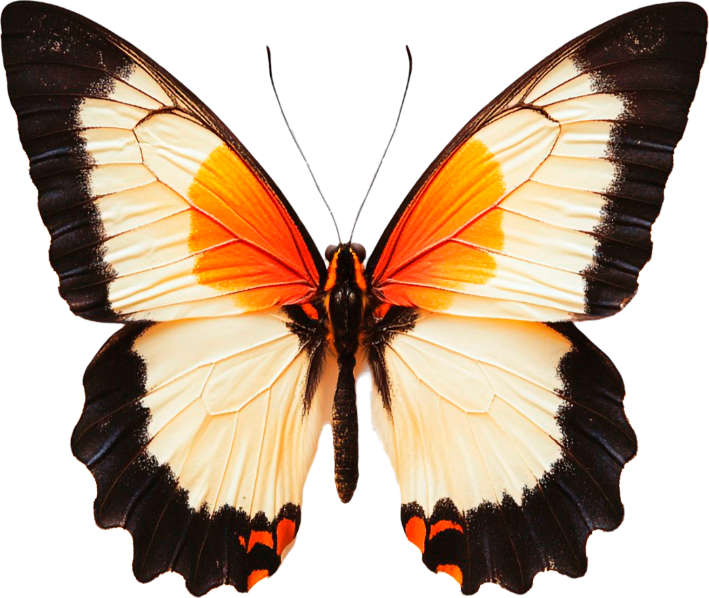
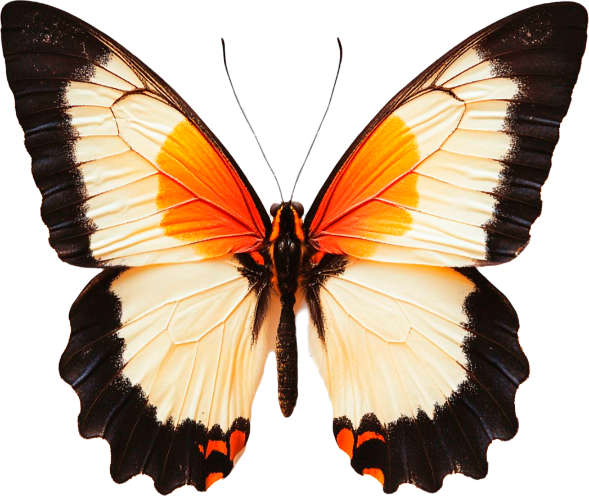

Papilionidi
I Papilionidi (famiglia Papilionidae) rappresentano uno dei gruppi più noti e affascinanti di farfalle diurne. Si tratta generalmente di specie di grandi dimensioni, facilmente riconoscibili per l’eleganza della forma alare e per il volo ampio e potente.
Molte specie presentano sulle ali posteriori caratteristiche appendici caudali che danno loro un aspetto inconfondibile e svolgono una funzione difensiva allontanando i predatori.
 

Morfologia
I Papilionidi possiedono ali ampie e ben sviluppate, spesso decorate con colorazioni contrastate che includono combinazioni di giallo, nero, blu e rosso. Questi colori possono avere una funzione di segnalazione aposematica, indicando la presenza di sostanze tossiche o sgradevoli accumulate durante lo stadio larvale.
Le antenne sono clavate, come in tutte le farfalle diurne, e l’apparato boccale è di tipo succhiante, adattato all’alimentazione a base di nettare tramite la spiritromba.
Ciclo vitale segue la metamorfosi completa
Le femmine depongono le uova singolarmente sulle piante nutrici, selezionate con estrema precisione.
I bruchi sono generalmente ben visibili e presentano colorazioni vivaci o mimetiche, a seconda della specie e dello stadio di sviluppo.
Una caratteristica distintiva delle larve è la presenza dell’osmeterio, un organo biforcuto e retrattile situato dietro la testa, che viene estroflesso in caso di minaccia ed emette sostanze chimiche dall’odore sgradevole per scoraggiare i predatori.
La fase di pupa avviene generalmente in forma di crisalide scoperta, fissata al substrato tramite un supporto di seta e una cintura addominale. La colorazione della crisalide varia in base all’ambiente circostante, rappresentando un efficace adattamento mimetico.
Dopo un periodo che può variare in base alle condizioni climatiche e alla specie, emerge l’adulto, pronto a riprodursi e a disperdersi nell’ambiente.
Habitat
Dal punto di vista ecologico, i Papilionidi sono strettamente legati a habitat naturali ben conservati, come prati ricchi di fioriture, zone collinari, ambienti mediterranei e margini boschivi.

Ruolo culturale / scientifico
Oltre al valore ecologico, i Papilionidi sono tra le farfalle più studiate nella storia dell’entomologia. Il loro studio consente di approfondire aspetti legati all’evoluzione, alle strategie difensive e alle interazioni tra insetti e piante, contribuendo alla comprensione della biodiversità dei Lepidotteri.